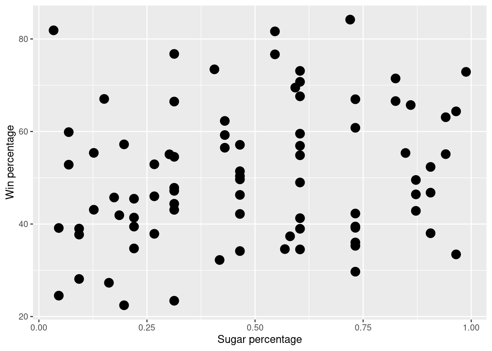
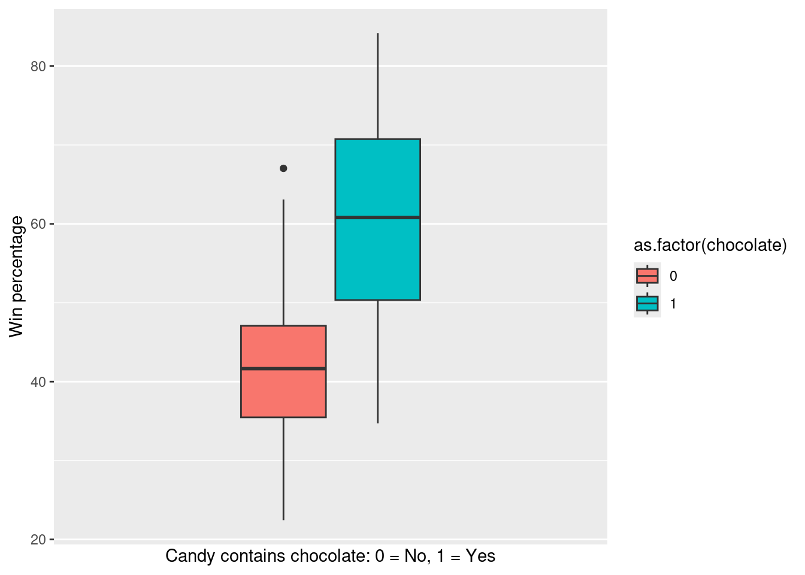

Model Selection
Learning objectives
- Understand model selection and recognize the impact of different predictors on model performance.
- Evaluate model fit using key metrics such as RMSE and adjusted \(R^{2}\).
- Detect overfitting by comparing model performance on training and test data.
Start your workflow by uploading the tidyverse package as always:
We will work with the data from the following article:
Hickey, W. (2007). The Ultimate Halloween Candy Power Ranking. FiveThirtyEight. https://fivethirtyeight.com/videos/the-ultimate-halloween-candy-power-ranking/
# Upload data from github
candy <- read_csv("https://raw.githubusercontent.com/laylaguyot/datasets/main//Halloween-candy.csv")
# Take a quick look
head(candy)This dataset is the result of an experiment: “Pit dozens of fun-sized candy varietals against one another, and let the wisdom of the crowd decide which one was best. While we don’t know who exactly voted, we do know this: 8,371 different IP addresses voted on about 269,000 randomly generated matchups.”
Here are the top 19 winners:

We are interested in determining what features of the candy might affect its win percentage. In that case, what is the outcome? What do you think could be a good predictor?
The outcome should be the win percentage, and give your best guess for the best predictor!
1. Choosing predictors
a. Predictors that do not make sense
Not all variables should be considered as potential predictors.
Try it! There is one variable in the dataset that would not be helpful as a predictor. Which one? Actually, try predicting the win percentage based on this variable (use lm). How does the model look like (use thesummary function)?
# Fit the model and look at the model summary
fit_lin <- lm(winpercent ~ competitorname, data = candy)
summary(fit_lin)##
## Call:
## lm(formula = winpercent ~ competitorname, data = candy)
##
## Residuals:
## ALL 85 residuals are 0: no residual degrees of freedom!
##
## Coefficients:
## Estimate Std. Error
## (Intercept) 66.9717 NaN
## competitorname3 Musketeers 0.6312 NaN
## competitornameAir Heads -14.6303 NaN
## competitornameAlmond Joy -16.6242 NaN
## competitornameBaby Ruth -10.0572 NaN
## competitornameBoston Baked Beans -43.5539 NaN
## competitornameCandy Corn -28.9608 NaN
## competitornameCaramel Apple Pops -32.4540 NaN
## competitornameCharleston Chew -27.9967 NaN
## competitornameChewey Lemonhead Fruit Mix -30.9541 NaN
## competitornameChiclets -42.4467 NaN
## competitornameDots -24.6996 NaN
## t value Pr(>|t|)
## (Intercept) NaN NaN
## competitorname3 Musketeers NaN NaN
## competitornameAir Heads NaN NaN
## competitornameAlmond Joy NaN NaN
## competitornameBaby Ruth NaN NaN
## competitornameBoston Baked Beans NaN NaN
## competitornameCandy Corn NaN NaN
## competitornameCaramel Apple Pops NaN NaN
## competitornameCharleston Chew NaN NaN
## competitornameChewey Lemonhead Fruit Mix NaN NaN
## competitornameChiclets NaN NaN
## competitornameDots NaN NaN
## [ reached getOption("max.print") -- omitted 73 rows ]
##
## Residual standard error: NaN on 0 degrees of freedom
## Multiple R-squared: 1, Adjusted R-squared: NaN
## F-statistic: NaN on 84 and 0 DF, p-value: NAThe competitor’s name would not make sense to use as a predictor: it is a unique value for each candy. Most of the information for the model was marked as NA. Note that the R-squared value is 1 meaning that we can recover the exact values of win percentage if we know the competitor’s name: that makes sense because once again there is a unique value of win percentage for a candy name.
There are two observations in this dataset that are not actually candies!
So let’s get rid of them:
b. Exploring relationships
We can visually inspect if there is a relationship between a potential predictor and the outcome.
Try it! Pick the predictor that you think would best explain the win percentage of a candy. Use ggplot to represent the relationship between winpercent and the predictor with an appropriate graph. Does there appear to be a relationship to predict the win percentage?
# Relationship with a numeric predictor = scatterplot
candy |>
ggplot(aes(x = sugarpercent, y = winpercent)) +
geom_point(size = 4) +
labs(x = "Sugar percentage", y = "Win percentage")
# Relationship with a categorical predictor = grouped boxplot or histogram
candy |>
ggplot(aes(fill = as.factor(chocolate), y = winpercent)) +
geom_boxplot() +
labs(x = "Candy contains chocolate: 0 = No, 1 = Yes", y = "Win percentage") +
scale_x_continuous(labels = NULL, breaks = NULL, limits = c(-1,1))
Sugar percentage does not seem to directly impact the win percentage. But the fact if a candy has chocolate or not does seem to have a higher win percentage.
c. Model fit and predictions
We can fit a model based on our data to make predictions for the outcome.
Try it! Keep working with the predictor that you previously picked. Fit a model and look at the summary. Interpret the sign (+ or -) of the estimate.
# Relationship with a numeric predictor
# Fit the model and look at the model summary
fit_lin <- lm(winpercent ~ sugarpercent, data = candy)
summary(fit_lin)##
## Call:
## lm(formula = winpercent ~ sugarpercent, data = candy)
##
## Residuals:
## Min 1Q Median 3Q Max
## -25.208 -10.789 -1.452 9.062 36.331
##
## Coefficients:
## Estimate Std. Error t value Pr(>|t|)
## (Intercept) 45.159 3.257 13.87 <2e-16 ***
## sugarpercent 11.076 5.798 1.91 0.0596 .
## ---
## Signif. codes: 0 '***' 0.001 '**' 0.01 '*' 0.05 '.' 0.1 ' ' 1
##
## Residual standard error: 14.52 on 81 degrees of freedom
## Multiple R-squared: 0.04311, Adjusted R-squared: 0.0313
## F-statistic: 3.649 on 1 and 81 DF, p-value: 0.05963# Relationship with a categorical predictor
# Fit the model and look at the model summary
fit_lin <- lm(winpercent ~ chocolate, data = candy)
summary(fit_lin)##
## Call:
## lm(formula = winpercent ~ chocolate, data = candy)
##
## Residuals:
## Min 1Q Median 3Q Max
## -26.1995 -7.3358 -0.3664 8.8520 24.7670
##
## Coefficients:
## Estimate Std. Error t value Pr(>|t|)
## (Intercept) 42.271 1.695 24.939 < 2e-16 ***
## chocolate 18.651 2.539 7.347 1.43e-10 ***
## ---
## Signif. codes: 0 '***' 0.001 '**' 0.01 '*' 0.05 '.' 0.1 ' ' 1
##
## Residual standard error: 11.5 on 81 degrees of freedom
## Multiple R-squared: 0.3999, Adjusted R-squared: 0.3925
## F-statistic: 53.98 on 1 and 81 DF, p-value: 1.432e-10Model with sugar percentage: higher sugar percentage means higher win percentage (positive estimate). Model with chocolate: containing chocolate means higher win percentage (positive estimate).
d. Performance
We should evaluate the performance of a linear regression model with the RMSE and adjusted \(R^2\).
Try it! Keep working with the same predictor. Report the values of RMSE and adjusted \(R^2\) and compare them to a model with a different predictors. How to choose which model is better?
# Relationship with a numeric predictor
fit_lin <- lm(winpercent ~ sugarpercent, data = candy)
sqrt(mean(resid(fit_lin)^2)) # RMSE## [1] 14.34027## [1] 0.03129886# Relationship with a categorical predictor
fit_lin <- lm(winpercent ~ chocolate, data = candy)
sqrt(mean(resid(fit_lin)^2)) # RMSE## [1] 11.35639## [1] 0.3924875Model with sugar percentage: the win percentage is predicted with about a 14 point difference from reality (RMSE), and only about 3% of the variation in win percentage is explained by sugar percentage.
Model with chocolate: the win percentage is predicted with about a 11 point difference from reality (RMSE), and about 39% of the variation in win percentage is explained by sugar percentage.
Comparing these two models, it looks like the chocolate variable predicts values of win percentage more accurately and explain more variation in the win percentage.
2. Comparing models
a. Using multiple predictors
Since we can also include more than one predictor, comparing models with different predictors can be tedious. One strategy is to fit all predictors and only focus on the ones that show more significance in the summary. This is not the best strategy, but it can help reduce the number of predictors.
Let’s fit all predictors to explain win percentage:
# Fit the model with all predictors but not the one that does not make sense
fit_lin <- lm(winpercent ~ ., data = candy |> select(-competitorname))
summary(fit_lin)##
## Call:
## lm(formula = winpercent ~ ., data = select(candy, -competitorname))
##
## Residuals:
## Min 1Q Median 3Q Max
## -20.3555 -6.1266 0.7911 6.6962 23.8793
##
## Coefficients:
## Estimate Std. Error t value Pr(>|t|)
## (Intercept) 32.0167 5.0502 6.340 1.86e-08 ***
## chocolate 21.2141 4.1193 5.150 2.24e-06 ***
## fruity 11.0080 4.0684 2.706 0.00853 **
## caramel 2.7928 3.6880 0.757 0.45140
## peanutyalmondy 10.6964 3.6481 2.932 0.00453 **
## nougat 0.4134 5.7135 0.072 0.94252
## crispedricewafer 8.8846 5.2600 1.689 0.09559 .
## hard -5.8636 3.4660 -1.692 0.09508 .
## bar 1.6927 5.1512 0.329 0.74342
## pluribus 0.2011 3.1905 0.063 0.94991
## [ reached getOption("max.print") -- omitted 2 rows ]
## ---
## Signif. codes: 0 '***' 0.001 '**' 0.01 '*' 0.05 '.' 0.1 ' ' 1
##
## Residual standard error: 10.69 on 71 degrees of freedom
## Multiple R-squared: 0.5455, Adjusted R-squared: 0.4751
## F-statistic: 7.747 on 11 and 71 DF, p-value: 1.275e-08Check for * in the last column. Which features are “significant” while taking into account all other variables?
It looks like chocolate, fruity, peanutyalmondy, and sugarpercent are the most useful.
Try it! Fit the model with only including the most significant predictors. How does adjusted \(R^2\) change?
# Fit the model with significant predictors
fit_lin <- lm(winpercent ~ chocolate + fruity + peanutyalmondy + sugarpercent, data = candy)
summary(fit_lin)##
## Call:
## lm(formula = winpercent ~ chocolate + fruity + peanutyalmondy +
## sugarpercent, data = candy)
##
## Residuals:
## Min 1Q Median 3Q Max
## -20.6166 -7.8557 -0.0544 6.7393 26.1737
##
## Coefficients:
## Estimate Std. Error t value Pr(>|t|)
## (Intercept) 31.001 4.101 7.559 6.70e-11 ***
## chocolate 22.488 3.799 5.919 8.21e-08 ***
## fruity 8.593 3.864 2.224 0.0290 *
## peanutyalmondy 8.929 3.501 2.551 0.0127 *
## sugarpercent 8.407 4.337 1.938 0.0562 .
## ---
## Signif. codes: 0 '***' 0.001 '**' 0.01 '*' 0.05 '.' 0.1 ' ' 1
##
## Residual standard error: 10.82 on 78 degrees of freedom
## Multiple R-squared: 0.4884, Adjusted R-squared: 0.4622
## F-statistic: 18.62 on 4 and 78 DF, p-value: 8.902e-11Adjusted \(R^2\) has decreased a little bit but not by much! We simplified the model a lot though with only 4 predictors instead of 11!
There are other strategies for selecting predictors but this is out of scope for our class. While having multiple predictors can improve our ability to make predictions, using too many predictors may lead to overfitting. The model may perform well on our data but will struggle making predictions for new data because it has learned specific patterns rather than generalizable trends.
b. Testing for “new” data
Since it is usually difficult to gather new data, we use the data that we have available and split it into what we call a train data (to train the model) and a test data (to test the model).
For example, consider 80% of the candy data as the train data:
Now we train the model we chose previously based on that train data:
# Fit the model with significant predictors on train data
fit_train <- lm(winpercent ~ chocolate + fruity + peanutyalmondy + sugarpercent, data = train_data)
summary(fit_train)##
## Call:
## lm(formula = winpercent ~ chocolate + fruity + peanutyalmondy +
## sugarpercent, data = train_data)
##
## Residuals:
## Min 1Q Median 3Q Max
## -20.422 -7.415 1.061 6.939 24.716
##
## Coefficients:
## Estimate Std. Error t value Pr(>|t|)
## (Intercept) 31.313 4.492 6.971 2.60e-09 ***
## chocolate 21.937 4.145 5.293 1.73e-06 ***
## fruity 9.879 4.201 2.351 0.0219 *
## peanutyalmondy 10.184 3.870 2.631 0.0108 *
## sugarpercent 7.484 4.745 1.577 0.1199
## ---
## Signif. codes: 0 '***' 0.001 '**' 0.01 '*' 0.05 '.' 0.1 ' ' 1
##
## Residual standard error: 10.97 on 61 degrees of freedom
## Multiple R-squared: 0.4849, Adjusted R-squared: 0.4511
## F-statistic: 14.35 on 4 and 61 DF, p-value: 2.58e-08Let’s calculate the RMSE for that model:
## [1] 10.54971Did we all get the same RMSE? Why or why not?
We probably all got something different! This is because we are looking at a different train data since we randomly picked 80% of the observations.
How is that trained model useful for predicting “new” data? Consider the rest of the data to test the model:
# Get the rest of the dataset into the test data
test_data <- anti_join(candy, train_data, by = "competitorname")Then evaluate the RMSE for the test data:
# Evaluate performance with RMSE on test data
sqrt(mean((test_data$winpercent - predict(fit_train, newdata = test_data))^2,))## [1] 10.44055Comparing the value of the RMSE for the test data to the value of the RMSE for the train data can help us evaluate how our model would be able to generalize to new data. If the test RMSE is much higher than the train RMSE, this suggests overfitting: indicating that while the model may perform well on known data, it struggles to make accurate predictions with new data. Ideally, the RMSE for the test data should be similar to the RMSE for the train data. We will talk more about that with cross-validation.
Recommended Resources
- Worksheet keys are posted at the end of the week on Canvas under Programming Tools.
- Recommended readings: Model building and refresh on Linear regression